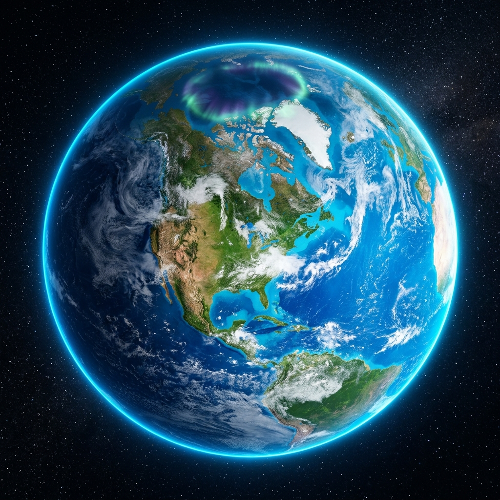

NASA VIIRS / DMSP
Changing Night Lights
Explore artificial light changes across Earth from 2012 to 2023. Hear how human activity and urban growth transform our planet's nighttime signature.
TerraEcho transforms authentic NASA Earth science observations into interactive visual experiences and meaningful sounds — connecting you to our living planet through data, sight, and sound.

Explore artificial light changes across Earth from 2012 to 2023. Hear how human activity and urban growth transform our planet's nighttime signature.
Explore sea-surface current movements and temperature patterns. Hear the pulse of our oceans translated into immersive soundscapes.
Earth's scientific data tells a powerful story — but charts and numbers alone can feel distant. TerraEcho bridges that gap by translating real NASA satellite measurements into sound and interactive visualizations, making Earth science accessible to everyone.
Interact with the Earth globe and overlay NASA dataset measurements
Explore artificial light changes across Earth from 2012 to 2023. Actual radiance measurements drive both the visualization and the sound.
Explore sea-surface current movements and temperature patterns. Actual velocity and temperature measurements drive both visualization and sound.
Upload your verified NASA dataset files. TerraEcho will inspect and validate the file structure before enabling any visualization or sound features.
Drag & drop NASA Night Lights file here
or
Parsing file…
Drag & drop NASA Ocean dataset file here
or
Parsing file…
| Format | Extension | Notes |
|---|---|---|
| Comma-Separated Values | .csv | Header row required; delimited by comma |
| Tab-Separated Values | .tsv | Header row required; delimited by tab |
| JSON Array | .json | Array of objects with consistent keys |
| GeoJSON | .geojson | FeatureCollection with numeric properties |
Professional audio player driven entirely by validated NASA measurements. Load a dataset first to enable playback.
How TerraEcho transforms real NASA measurements into sound
Satellite sensors collect real Earth measurements — night-light radiance and sea-surface temperature/currents.
You upload the official NASA data file (CSV, TSV, JSON, GeoJSON) through TerraEcho's secure local FileReader.
TerraEcho inspects the file structure, detects column types, validates numeric measurements, and checks for completeness.
Raw values are normalized using min-max scaling. Original measurements are always preserved — no alteration occurs.
Normalized values are mapped to audio parameters — frequency, gain, filter cutoff, and stereo pan — using the Web Audio API.
Smooth frequency transitions (exponentialRampToValueAtTime) prevent harsh audio jumps. Each data point creates a timed audio event.
Synchronized canvas visualizations show which data point is currently sounding, linking the audio experience to spatial Earth data.
Instrument: Sine wave oscillator with envelope shaping.
All radiance values are measured in nW/cm²/sr as reported by the NASA dataset.
Instrument: Sawtooth oscillator + lowpass filter + vibrato LFO.
Velocity in m/s, SST in °C, as reported by the NASA dataset.
Official dataset references and attributions. TerraEcho is a student project and is not endorsed by NASA.
The NASA Black Marble product suite provides high quality, cloud-free, atmospheric corrected nighttime lights imagery produced by compositing nighttime lights from the VIIRS Day/Night Band (DNB) for the entire globe. Time series coverage spans from 2012 to present, enabling analysis of changes in artificial light emission.
OSCAR (Ocean Surface Current Analysis Real-time) provides near-real-time estimates of global ocean surface currents derived from satellite altimetry, wind, and sea-surface height data. The GHRSST (Group for High Resolution Sea Surface Temperature) multi-sensor L4 analysis provides daily global sea-surface temperature fields.
NASA Earth science datasets are distributed publicly through EOSDIS Distributed Active Archive Centers (DAACs). Because NASA requires free, open registration to track scientific data usage, programmatic and direct downloads require a free NASA Earthdata Login account. Follow this verified protocol to acquire official observations:
Register a free account at urs.earthdata.nasa.gov. This single login grants access across all 12 NASA DAAC repositories.
Access Earthdata Search or LAADS DAAC. Search for VNP46A4 (Black Marble annual) or OSCAR_L4_OC_third-deg (Ocean currents).
Download scientific granules (HDF5 / NetCDF / GeoTIFF) or export regional CSV tabular coordinates using NASA Worldview or Panoply/GDAL tools.
Navigate to the Upload & Validation section in TerraEcho. Drop your downloaded CSV file or use the built-in Load Verified NASA Stream button to run the validated NASA test observations.
TerraEcho is a student project submitted to the NASA Space Apps Challenge 2026. It is not endorsed by, affiliated with, or representative of NASA. All dataset attributions reference official NASA sources. Dataset files must be obtained directly from NASA's official data portals.
Our mission, our team, and the story behind Earth's Living Soundscape
Earth's scientific data tells a powerful story — but charts and numbers alone can feel distant and inaccessible. TerraEcho bridges that gap by translating real NASA satellite measurements into sound and interactive visualizations, making Earth science accessible, emotionally resonant, and meaningful for everyone.
Vast amounts of Earth observation data are collected daily by NASA satellites. Most of this data remains inaccessible to the general public — locked behind complex file formats, specialized software, and scientific jargon. As a result, the remarkable story of a changing planet goes untold to billions of people.
Sound engages our perception in ways that charts cannot. By transforming data into audio, TerraEcho creates an intuitive, emotional connection to Earth science data. Listening to the rhythm of ocean currents or the growing brightness of city lights over time creates understanding that transcends technical barriers — opening Earth science to new audiences including the visually impaired.
Project Lead & Data Scientist
Responsible for overall architecture, NASA dataset integration, and scientific accuracy of data processing.
Frontend Developer & Visualizer
Built the interactive Earth globe, canvas-based visualizations, and responsive UI design system.
Web Audio API Specialist
Designed and implemented the sonification engine, mapping NASA measurements to musical parameters.
UI/UX Designer
Created the premium scientific interface design, interaction patterns, and accessibility guidelines.
Science Communication Lead
Authored scientific explanations, NASA attribution content, and educational materials for the platform.
Click any name above to edit it with your actual team member's name.
TerraEcho was created for the Earth Information Jukebox challenge, exploring how Earth science data can be made more accessible and engaging through interactive audio-visual experiences.